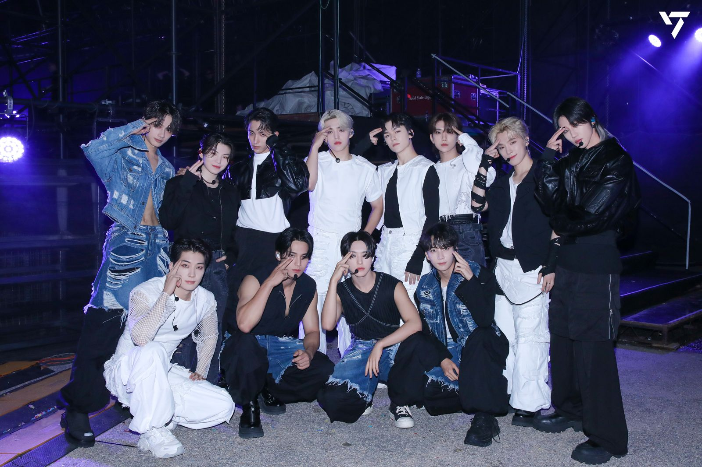
SEVENTEEN
The Decade Issue2015 — 2025韓文專輯入門特輯
十年專輯之旅：
從 17 Carat 到 Happy Burstday
20 張專輯，5 個時期一張圖看懂 SEVENTEEN 的時間軸
〈Don't Wanna Cry〉2017 年的成績突破是怎麼發生的
走出影子Face the Sun 與十週年的「重生」故事
SEVENTEEN 十年特刊1 / 15
Who are they
13 個人，
自己寫歌的偶像團體
SEVENTEEN 是 PLEDIS Entertainment 的 13 人男團。出道前，成員就在網路節目《Seventeen TV》露面，2015 年 5 月 26 日正式出道。
- 自製型偶像成員參與作詞、製作和編舞；WOOZI 參與了每一首歌的製作。
- 先決定故事WONWOO 說過，每次發片前，成員會先開會決定這次想說什麼故事。
- CARATSEVENTEEN 粉絲的名稱，後面的故事裡會再出現。
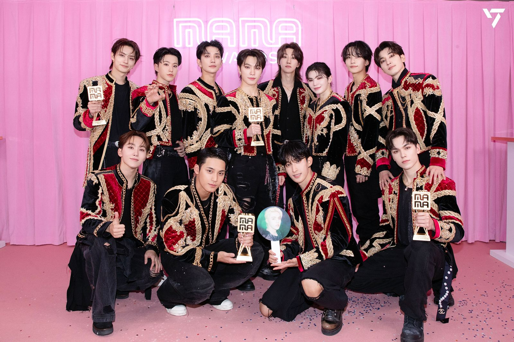
SEVENTEENWho are they2 / 15
Glossary
看懂這份特刊的 8 個詞
- 迷你專輯
- 收錄歌曲比較少的專輯。SEVENTEEN 出了 12 張。
- 正規專輯
- 完整長度的專輯，十年來出了 5 張。
- 特別專輯
- 不算在迷你或正規編號裡的專輯，例如 Director's Cut。
- 改版專輯
- 在原專輯裡加入新歌後重新發行。
- 音樂節目一位
- 韓國電視台每週的音樂節目選出的第 1 名。
- 大賞
- 年末頒獎典禮的最高獎項，例如「年度專輯」。
- 預購
- 專輯正式發行前的訂購量，常拿來衡量人氣。
- 主打歌
- 每張專輯主要宣傳、上節目表演的那首歌。
Glossary3 / 15
The map
一張圖看十年：5 個時期
2015
出道與起步
- 17 Carat
- Boys Be
- Love & Letter
- Going Seventeen
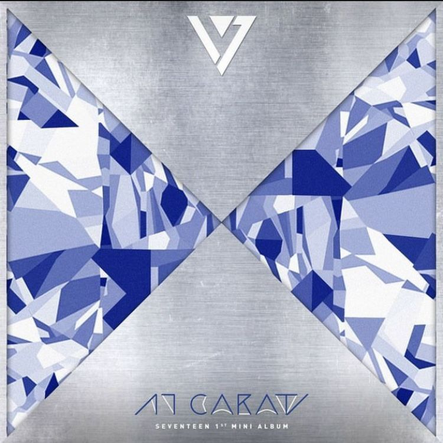
2017
突破與成長
- Al1
- Teen, Age
- Director's Cut
- You Make My Day
- You Made My Dawn
- An Ode
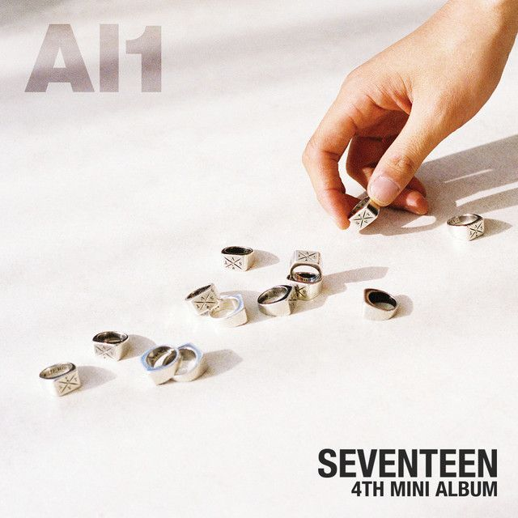
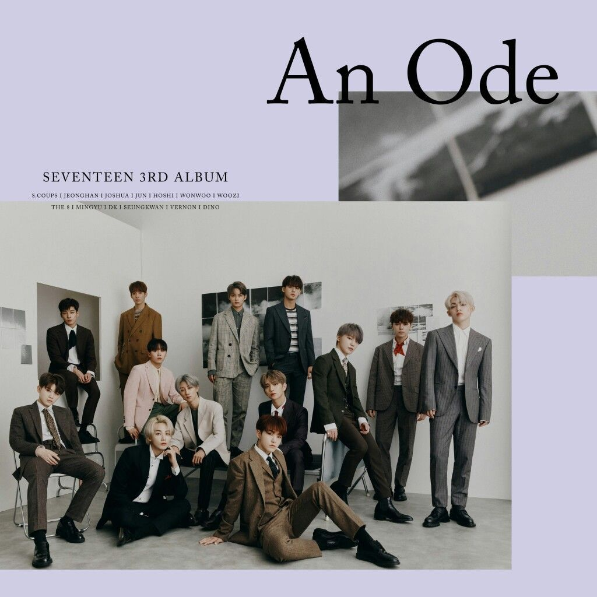
2020
百萬銷量與 Power of Love
- Heng:garæ
- ; [Semicolon]
- Your Choice
- Attacca
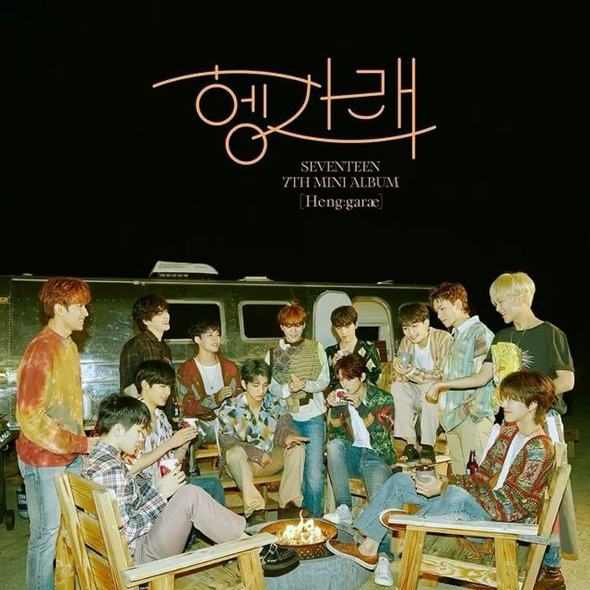
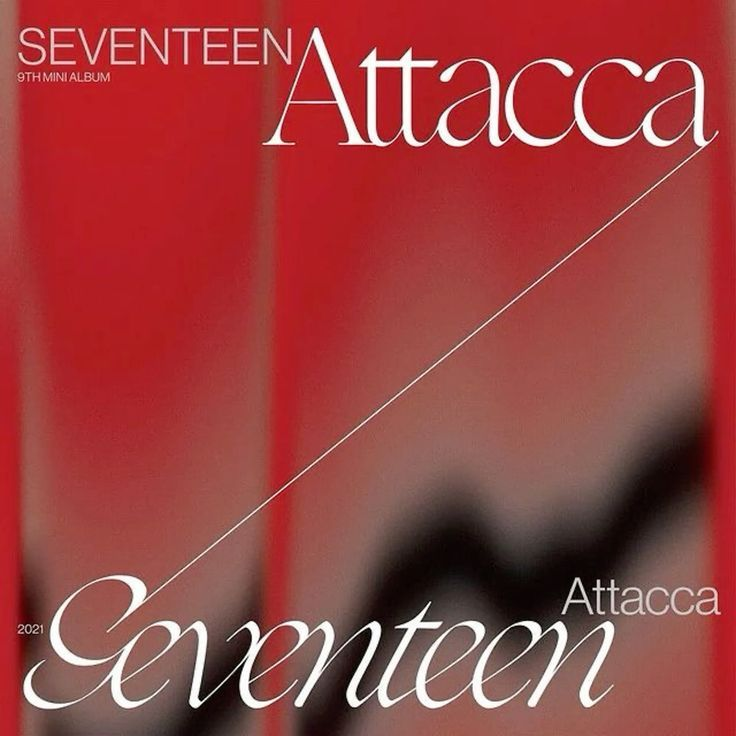
2022
Face the Sun 與巔峰
- Face the Sun
- FML
- Seventeenth Heaven
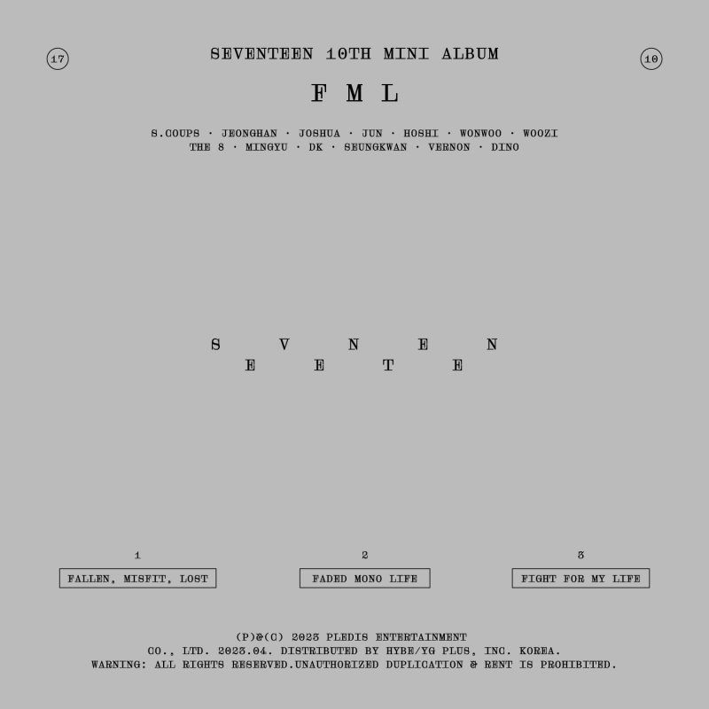
2024
十週年
- 17 Is Right Here
- Spill the Feels
- Happy Burstday
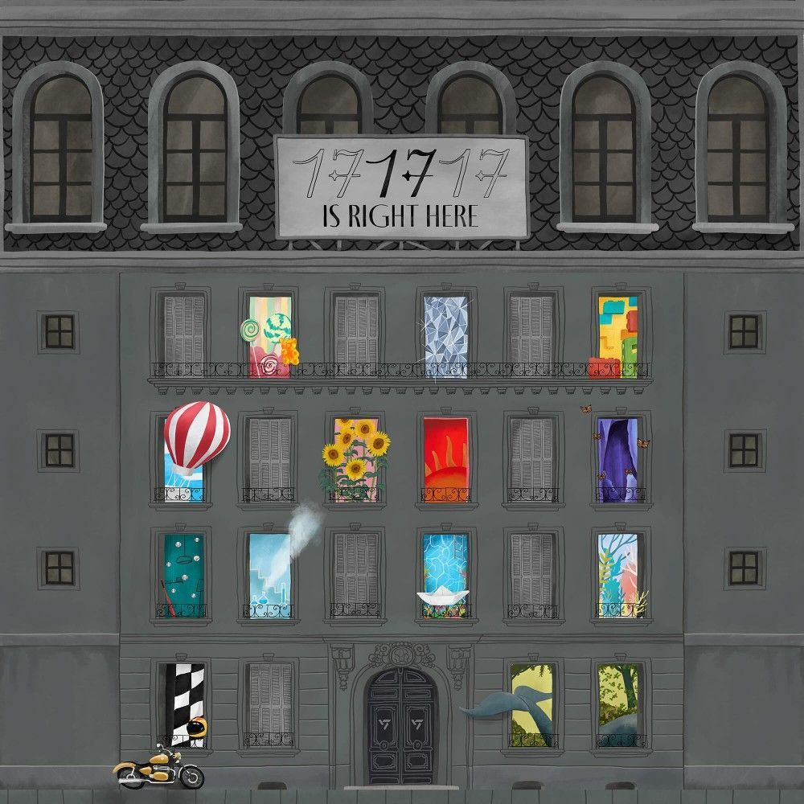
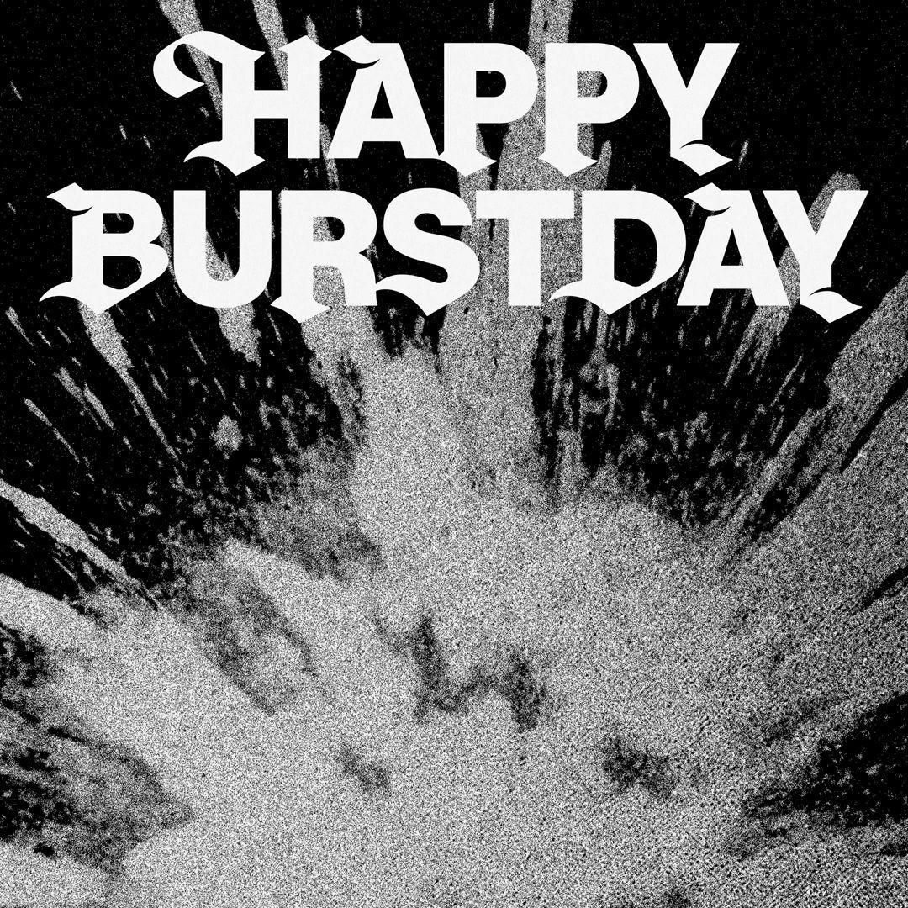
The map4 / 15
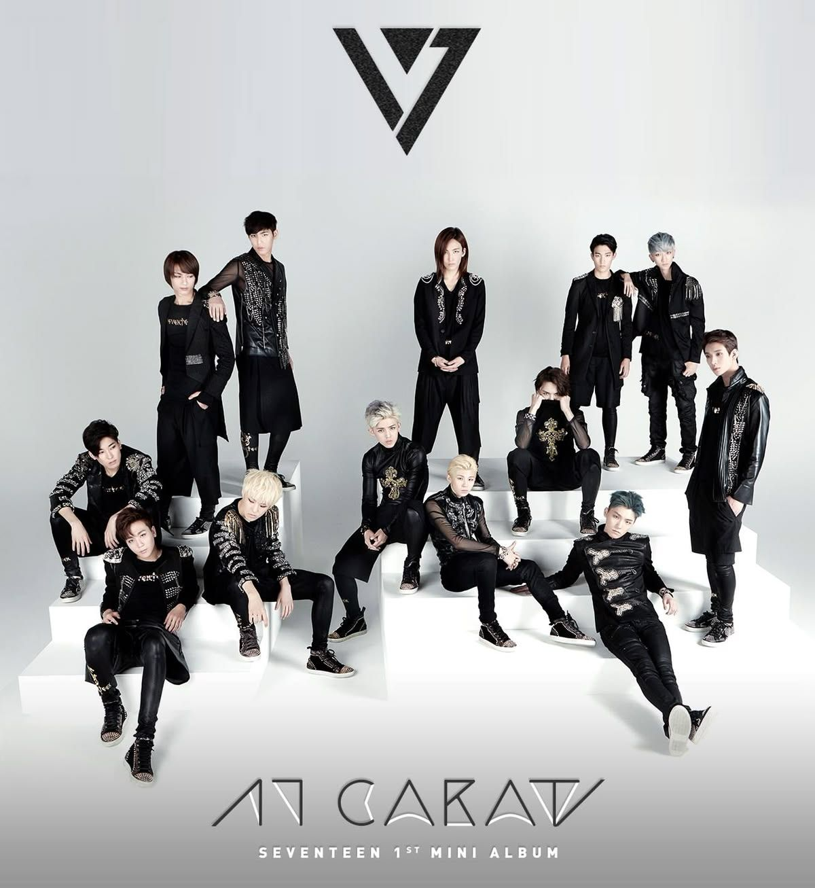
17 Carat，20152015
Chapter one · 出道與起步
輕快的銅管、少年感的形象
- 出道前MBC 實境節目《Seventeen Project: Big Debut Plan》記錄出道前最後的準備。
- 17 Carat出道作，是 Billboard 選出的 2015 年最佳 K-pop 專輯裡唯一的新人專輯。
- Boys Be成為當年銷量最高的新人專輯。
- 2016〈Pretty U〉在《Show Champion》拿到第一個音樂節目一位；Love & Letter 是第一張登上專輯榜冠軍的專輯。
Chapter one · 2015–20165 / 15
Chapter two · The turn
Don't Wanna Cry
成績突破的一首歌
#94→#12韓國單曲榜最高名次：〈Mansae〉（2015）對比〈Don't Wanna Cry〉（2017）
0.5
「2017 SEVENTEEN Project」的序章：一系列影片和三支副標為 Chapter 0.5 的 MV。
1第一章就是〈Don't Wanna Cry〉。曲風轉向 EDM 和 electropop，和早期輕快的情歌完全不同。
- 6 次音樂節目一位，橫跨 The Show、Music Bank、Show Champion、M Countdown；K-pop Hot 100 第 1 名。
- MAMA 2017最佳舞蹈表演男團獎；這也是他們第一支 YouTube 破 2 億觀看的 MV。
WOOZI 說這首歌不是分手歌，而是延續〈Smile Flower〉的情緒；歌曲條目則把歌詞描述為分手後的心碎，兩種說法並存。
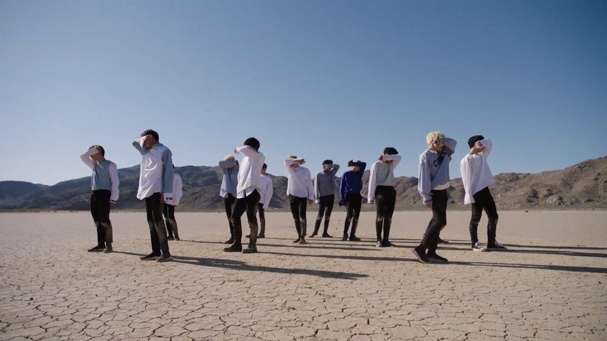
〈Don't Wanna Cry〉MVAl1第 4 張迷你專輯，2017
Chapter two · 20176 / 15
Chapter two · Growing up
從 10 座一位，
到第一個大賞
10 座〈Home〉在每週音樂節目拿到的一位（You Made My Dawn，2019）
70 萬An Ode（2019）首週銷量
大賞An Ode 在 Asia Artist Awards 拿到年度專輯，是第一個大賞
- Teen, Age第二張正規專輯（2017）；收錄曲〈CLAP〉的 MV，概念就是由 SEVENTEEN 自己製作 MV。
- Director's Cut2018 年的特別專輯，主打〈Thanks〉。
- You Make My Day第一張在韓國拿到白金認證的專輯；An Ode 也被 Billboard 評選為年度最佳 K-pop 專輯。
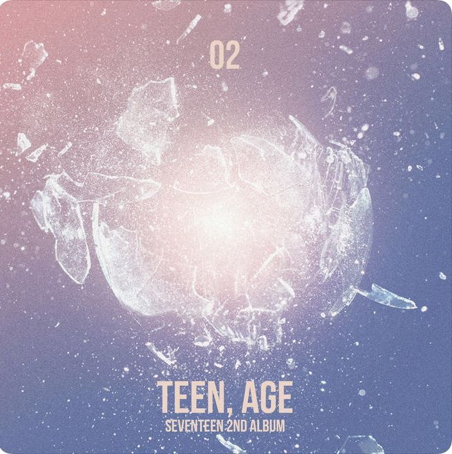
Teen, Age，2017An Ode第 3 張正規專輯，2019
Chapter two · 2017–20197 / 15
Power of Love2021 年的系列計畫
2020
Chapter three · 百萬銷量與 Power of Love
一週破百萬，
再到雙百萬
- Heng:garæ不到一週賣出一百萬張，正式成為「百萬銷量歌手」。
- ; [Semicolon]以「特別專輯」推出，主打〈Home;Run〉。
- Your Choice屬於 2021 年的 Power of Love 計畫，也是第一張進入美國 Billboard 200 的韓文專輯。
- Attacca第一張雙百萬銷量的專輯。同一年，成員全員續約。
Chapter three · 2020–20218 / 15
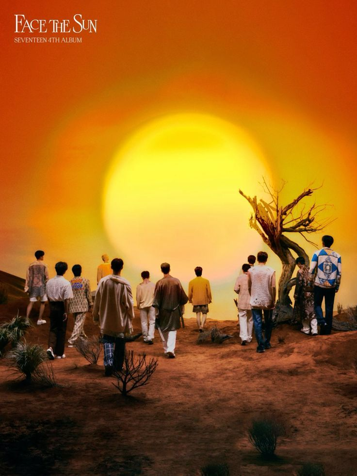
Face the Sun，2022Chapter four · Face the Sun
13 個人，
一起走出影子
影
預告影片「13 Inner Shadows」裡，成員說「NOT SEVENTEEN anymore」；有一組概念照是唯一沒有團體照的一組。
日一張圖裡 13 個點連起來，形成太陽的形狀。評論認為，專輯從黑暗走向光明，從「你和我」走向「我們」。
13每一首歌都由 13 人全員演唱，沒有小分隊歌曲。主打〈HOT〉的 MV 是瘋狂麥斯風格的機車牛仔世界。
之後的改版專輯 Sector 17，主打〈_World〉。
Chapter four · 20229 / 15
Chapter four · The peak
2023：
最會賣的一年
450 萬FML 首週銷量（預購 460 萬）
520 萬Seventeenth Heaven 預購，K-pop 史上最多
冠軍〈God of Music〉第一次登上 Circle 數位榜冠軍
- IFPIFML 是 2023 年全球最暢銷的專輯。
- MAMA年度專輯：2023 年 FML、2024 年 Seventeenth Heaven。
- Billboard 200兩張都拿到第 2 名。
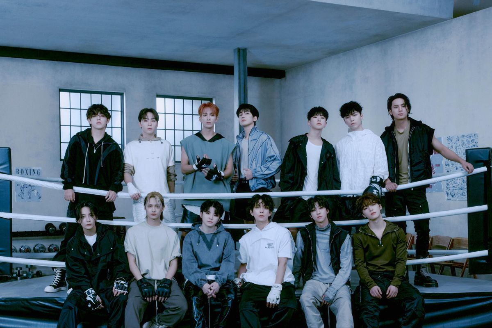
FML，2023Chapter four · 202310 / 15
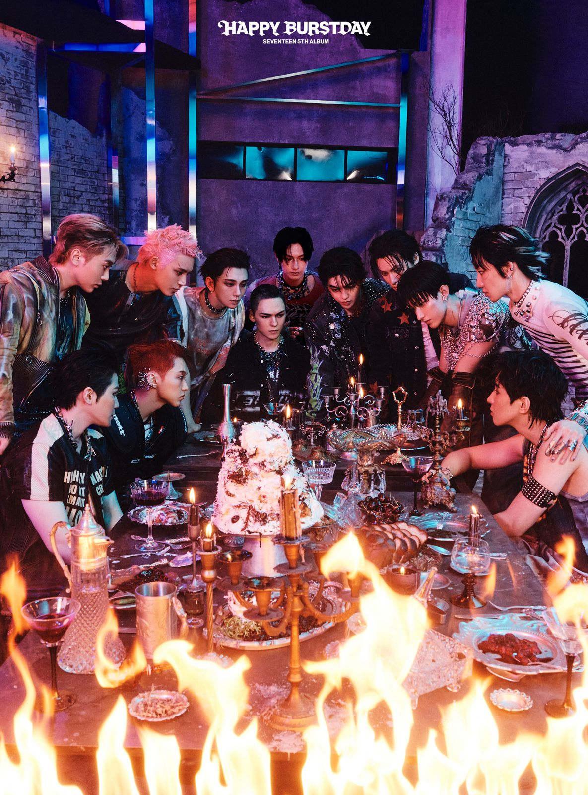
Happy Burstday，20252025
Chapter five · 十週年
HAPPY BIRTHDAY
＋ BURST
- 17 Is Right Here2024 年的精選輯，收錄歷年韓文單曲，新歌〈Maestro〉。
- Happy Burstday出道十週年當天發行，13 人全員參與；前一天在蠶室大橋舉辦約 10 萬人的 showcase。
- DARE OR DEATH概念影片要成員在「挑戰」和「安於現狀」之間選擇；評論把整個系列解讀為「重生」。
- 3 + 133 首團體歌，加上 13 位成員各一首個人曲。
Chapter five · 2024–202511 / 15
Storyline · Echoes
他們的作品，
常常回頭引用自己
2017
〈CLAP〉的 MV，概念就是由 SEVENTEEN 自己製作 MV。2022
評論把 Face the Sun 和〈CLAP〉放在同一條「自製世界觀」的脈絡裡。Weverse Magazine 評論2024
精選輯封面的每個房間都在呼應過去：棒球對應〈HOME;RUN〉、太陽對應〈HOT〉、船對應〈BOOMBOOM〉。粉絲分析2024
〈MAESTRO〉的 MV 借用了出道曲〈Adore U〉的彈出選項。粉絲分析Storyline · Echoes12 / 15
Storyline · Carat
粉絲，被寫進了故事裡
從 Face the Sun 開始，CARAT 不只是聽眾，也成了專輯故事的一部分。
2022
一起面對太陽
評論認為，Face the Sun 的故事最後是邀請聽眾一起面對太陽。Weverse Magazine 評論2022
最後一塊拼圖
改版 Sector 17 時期，聽眾被比喻成「最後一塊拼圖」。粉絲分析2024
傾聽粉絲
Spill the Feels 被形容為內省、傾聽粉絲聲音的作品。Weverse Magazine 評論2025
〈Jungle〉
S.COUPS 在十週年專輯的收尾曲裡，坦白自己需要粉絲和愛。Weverse Magazine 評論Storyline · Carat13 / 15
By the numbers
韓國累計銷量：
從約 20 萬張，到 640 萬張
韓國累計銷量，不是首週銷量；紅色是十年來最高的 FML。資料：Wikipedia discography（2026-11-23 擷取）。
By the numbers14 / 15
Start here
每個時期，先聽這一首
出道與起步Pretty U拿下第一個音樂節目一位的歌
突破與成長Don't Wanna Cry曲風轉向成熟的成績突破之作
Power of LoveRock with You第一張雙百萬專輯 Attacca 的主打
Face the SunHOT走出影子、面對太陽的那張專輯
十週年Thunder宣告「重生」的十週年主打
十年下來，SEVENTEEN 從自己寫的少年情歌出發，一路把 13 個人和粉絲都寫進了同一個故事裡。
照片來源：PLEDIS Entertainment。內容依據本專案 LLM Wiki 的 9 篇來源（Wikipedia、Soompi、Weverse Magazine、ABS-CBN、官方專輯名稱、粉絲分析）整理；標示「評論」或「粉絲分析」的是解讀，不是官方說法。
Start here15 / 15